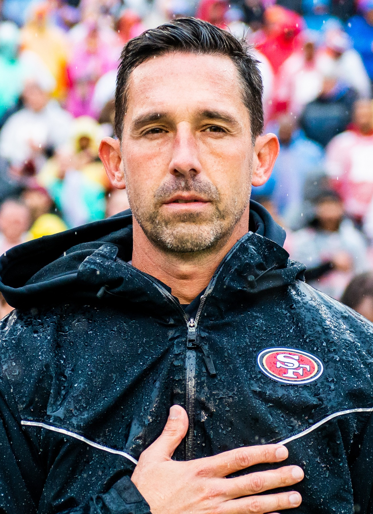

Losing Juice for Seattle Is a Real Bummer
Kyle Juszczyk's knee came back as a sprain and a bone bruise, which means two to three weeks on the shelf. We dodged the worst of it. We still have to go to Seattle without him, and I hate that.

Okay. Deep breath. It could've been so much worse.
When Juice went down after that catch in the fourth quarter Sunday and didn't come back, I sat on the couch with my hand over my mouth for a good minute. A knee hit like that on a guy who's been doing this for 14 years, my brain went straight to the torn ligament, the season's over, all of it. My buddy texted me one word. "Knee?" I didn't even answer him.
So when the MRI came back as a sprain and a bone bruise, no tear, and the word was two to three weeks, I was relieved. Honestly relieved. I'll take that every single time.
But it's still a bummer. Because the very next game is in Seattle.
Of all the weeks to lose him
I don't love going up to Lumen Field even when we're healthy. It's loud, it's wet half the time, the Seahawks always seem to save their best game of the year for us, and every trip up there turns into some ugly, grinding, fourth quarter thing that takes a year off my life. We're 4 and 0 and I still don't feel safe about Sunday.
And now we're walking in there without the guy who makes the whole offense move.
People who don't watch us every week hear "fullback" and shrug. I get it. Around most of the league the fullback is a guy who comes in on third and one, hits somebody, and goes back to the bench. Juice isn't that guy. Juice is the motion. He's the reason the defense is guessing before the ball's even snapped.
All that backfield motion runs through him
Think about how Kyle builds a play. Juszczyk starts in the backfield, then he shifts out wide like a receiver, then he comes back across in motion, and now the linebackers have to decide if he's blocking, if he's running a route, or if he's leading for McCaffrey. Every one of those little shifts changes who's got who. A defense can't just sit in one look and wait, because Juice keeps moving the furniture around.
Then the ball's snapped and he does whatever the play needs. He'll kick out the end on a toss, or lead through the hole on inside zone and put a linebacker on the ground, or leak out into the flat on play action where Purdy hits him for eight like it's nothing. He had two catches for 28 yards Sunday before he got hurt, and the offense felt different once he was gone. Flatter. More predictable.
That's what scares me about Seattle. Their defense is fast and it flies to the ball. If our formations stop moving, if we're just lining up in the same thing and running it, a fast defense eats that up. The whole point of all the motion is to make a defense like that hesitate for half a second.
Juice is that half second.

Nobody else does this
I keep trying to talk myself into the fill in plan and I can't quite get there. Kyle will figure something out, he always does. Maybe it's more two tight end stuff with Kittle. Maybe it's a tight end sliding into the fullback spot and moving around the way Juice does, or more of McCaffrey lined up out wide. It'll be fine, probably.
But fine isn't Juszczyk. There's a reason he's been a Pro Bowl regular at a position most teams barely use anymore. You can replace the snaps. You can't replace the guy who knows exactly where every piece of the offense is supposed to be, the guy Purdy trusts, the guy who makes the motion actually mean something.
He's going to be missed. A lot. More than anybody outside the Bay will ever give him credit for.
So heal up, Juice. Two weeks would be great. I'll take three. Just come back healthy, because this team's got a real shot and we're going to need you in January.
And in the meantime, somebody please go up to Seattle and hit something.
If you missed it, here's my reaction to the Broncos win where Juice got hurt, and earlier today I made the case that this is the team to beat in the NFC. His knee and the rest of the injury list are on the 49ers injury report, and every game this year lives on the 2026 49ers schedule hub.
More coverage: 49ers · NFL · Bay Area Sports Blog home